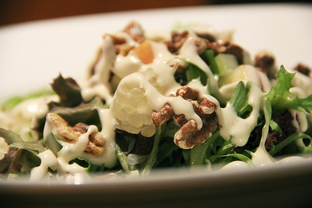

Poireaux vinaigrette

Description
Poireaux Vinaigrette is a classic French starter featuring tender boiled leeks dressed with a simple vinaigrette made of mustard, vinegar, and olive oil.
Light, fresh, and flavorful, it’s often served chilled as an appetizer or alongside a main course.
Ingredients
- 4–5 medium leeks
- 2 tablespoons olive oil
- 1 tablespoon vinegar (white wine or red wine)
- 1 teaspoon Dijon mustard
- Salt and black pepper, to taste
- Optional: chopped parsley or chives for garnish
Steps
- Trim the leeks: remove the dark green tops and roots. Slice them in half lengthwise and wash thoroughly to remove dirt.
- Boil or steam the leeks until tender (about 8–10 minutes). Drain and let them cool slightly.
- Prepare the vinaigrette: whisk together olive oil, vinegar, mustard, salt, and pepper.
- Place the leeks on a serving plate and drizzle with the vinaigrette.
- Garnish with chopped parsley or chives if desired.
- Serve warm or chilled as an appetizer.
Home